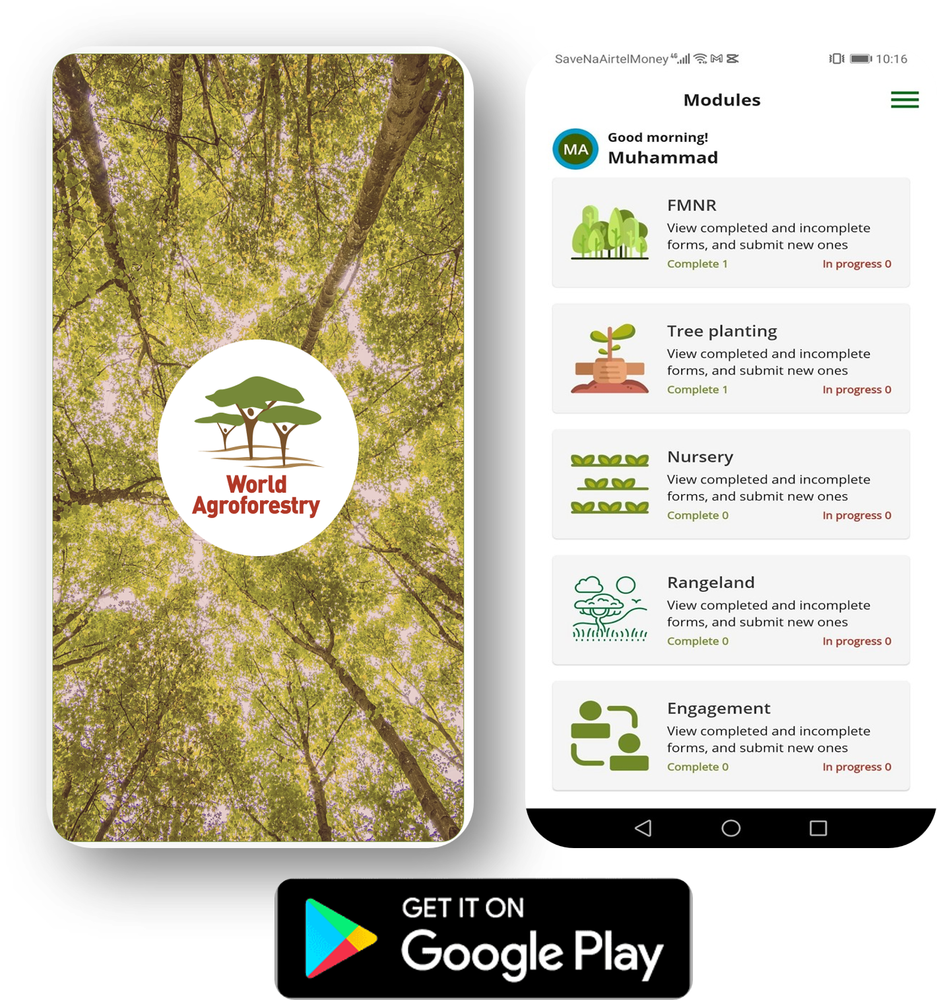

Restoration Monitoring Toolkit
A decision-support workbench for assessment, targeting, design, monitoring, and reporting, using harmonised indicators and state-of-the-art spatial analytics.

Landscape assessment is the foundation of effective restoration planning. It is important to understand current land conditions, degradation processes, and climate stressors before decisions are made about where or how to intervene.
Rather than relying on a single proxy for land health, assessment integrates many different indicators like soil condition, erosion prevalence, vegetation dynamics, and climate variability, for a good understanding of the different dimensions of ecosystem function and vulnerability.
This multi-indicator approach supports an understanding of landscape-level trends and patterns over time, distinguishing between long-term degradation and short-term variability, and providing a defensible baseline against which future change can be measured.
Why spatial evidence matters at this stage

Landscape conditions can vary substantially across space. Maps can help identify patterns, gradients, or potential constraints that are otherwise invisible in aggregated statistics or when using only one kind of indicator. Understanding broader landscape patterns and conditions is critical for downstream decision-making with regards to risk management, site targeting and intervention design.
Who this supports
State of the Land
Interactive report that steps readers through interpreting different spatial indicators across climate, soil health, vegetation dynamics, and degradation for the GGW region.


Explore SOC, erosion risk, vegetation dynamics, and climate parametres interactively and across scales.

What each indicator means, how to interpret it, and important considerations (scale, uncertainty, thresholds).

Explore fine-scale flood and drought risk maps across the GGW region.

Targeting turns landscape assessment into actionable decisions about where restoration efforts are most likely to succeed and be most impactful.
Prioritisation means selecting locations where degradation processes, biophysical potential and/or socio-economic context align with specific restoration objectives and where optimal returns can be expected.
By integrating spatial indicators and thresholds, targeting helps identify areas where intervention leverage is high from those where risks, costs or uncertainties might outweigh the potential benefits. Maps can help ground and even quantify these decisions.
Why spatial evidence matters at this stage

Targeting and prioritisation require translating project goals into spatial criteria to see where interventions are most likely to succeed. For example, if project goals are to reduce soil erosion and improve soil fertility and water-holding capacity, hotspot maps enable visualisation and quantification of where erosion is high, and soil fertility and water-holding capacity is low. Decision-makers can weigh multiple considerations at once - feasibility, risks, returns, and trade-offs - while remaining transparent about assumptions and uncertainties.
Who this supports
K4GGWA Dashboards
Landscape analytics for the GGW region across climate risk, land health, vegetation dynamics and biodiversity.

Explainer video on how to use maps and other spatial data to inform restoration planning.

Explore thematic datasets and tools across continental Africa.

An information note to describe what decision dashboards are and how they can be used to assist in evidence based decision making and planning.
Intervention design focuses on deciding what restoration actions are appropriate for a given location once priority areas have been identified.
Effective design recognises that restoration is context-dependent. Climate, soils, land use, degradation processes, and local management practices all shape which interventions are feasible, sustainable, and likely to deliver positive outcomes.
Linking spatial evidence to practical design choices helps avoid mismatches between ambition and context; supports realistic planning and; reduces the risk of failure during implementation.
Why spatial evidence matters at this stage

Maps help identify where different restoration practices and species are ecologically appropriate. For example, guiding tree planting toward areas with sufficient rainfall and suitable soils; informing species selection using distribution and suitability maps; or indicating where farmer-managed natural regeneration and soil–water conservation practices are more appropriate than planting. By making constraints, risks and opportunities explicit, spatial data can help design projects that are feasible, optimised returns on investment, and transparent about assumptions and different trade-offs.
Who this supports
Africa Tree Finder Application
Easy-to-use app shows you data on the distribution of indigenous tree species in different natural vegetation types, combined with information on the products and services that the tree species can provide. It arms practitioners with the information needed to select the best tree species for your landscape restoration or agroforestry efforts.


Web app species selection tool to filter suitable tree species for tree-based restoration projects.

Tutorial for selecting tree species based on desired use and suitability to local ecological context.
Explore SOC, erosion risk, vegetation dynamics, and climate parameters interactively and across scales.
Monitoring focuses on understanding how landscapes are changing following restoration interventions, and whether observed trends align with expectations and objectives.
Rather than relying on one-off measurements, effective monitoring uses time-series analysis to distinguish real change from seasonal variability, climate-driven fluctuations, short-term noise and other confounding factors.
By integrating monitoring results into adaptive management, practitioners can refine interventions and respond to emerging risks, improving outcomes over time.
Why spatial evidence matters at this stage

Monitoring and adaptive management depend on understanding change through time. Spatially explicit indicators allow trends to be tracked consistently across landscapes, compared to pre-intervention baselines and interpreted in the context of climate variability and other potential confounding factors. This makes it possible to distinguish real signals of recovery or decline from short-term noise. They also make it possible to adjust actions as the project progresses, correcting or adapting where necessary.
Who this supports
Regreening App
A free mobile-based Android applcation designed for farm-scale citizen science data collection on restoration practices. Modules include tree planting, FMNR, rangeland management, nurseries, and engagement.


A restoration monitoring tool that enables users to visualise anomalous greening trends in their intervention sites.
Explore SOC, erosion risk, vegetation dynamics, and climate parameters interactively and across scales.

A field technicians' manual for monitoring restoration across watersheds
Reporting focuses on turning monitoring evidence into clear and credible outputs that support accountability to funders, governments, and stakeholders.
Effective reporting synthesises multiple lines of evidence into coherent narratives that explain what changed, where, and why it matters.
When combined with structured learning, reporting also supports continuous improvement, helping organisations refine strategies, compare approaches, and scale what works across landscapes and programmes.
Why spatial evidence matters at this stage

Reporting is where evidence is consolidated, communicated, and made accountable. Spatially explicit indicators enable consistent aggregation across projects and regions, tied to agreed baselines and interpreted with appropriate uncertainties.
This allows outcomes and progress to be reported transparently, quantitatively, and aligned with national, regional, and donor reporting frameworks.
Who this supports
K4GGWA Dashboards
Landscape analytics for the GGW region across climate risk, land health, vegetation dynamics and biodiversity.

This multipurpose platform is dedicated to reporting funding and results towards the targets of the Great Green Wall Initiatives of the Sahara and the Sahel

The UNCCD's national reporting system platform.

Real-world examples that connect evidence to outcomes, lessons, and lived realities.
Learn more

Explore how predictive maps are generated, from raw data collection in the field, to analytics and outputs.

Learn more about the features of this citizen-science data-collection tool for restoration project monitoring.

Learn more about the Land Degradation Surveillance Framework - the sampling protocol behind the world's largest systematic, georeferenced library of soil infrared spectra.